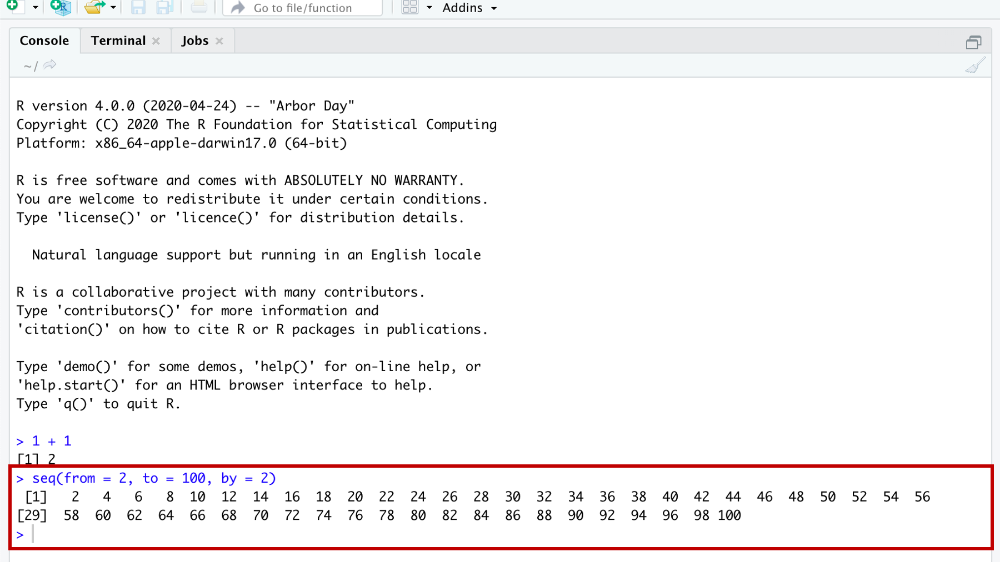
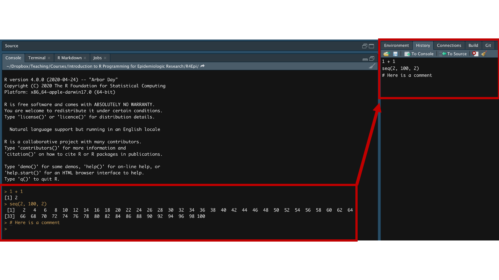
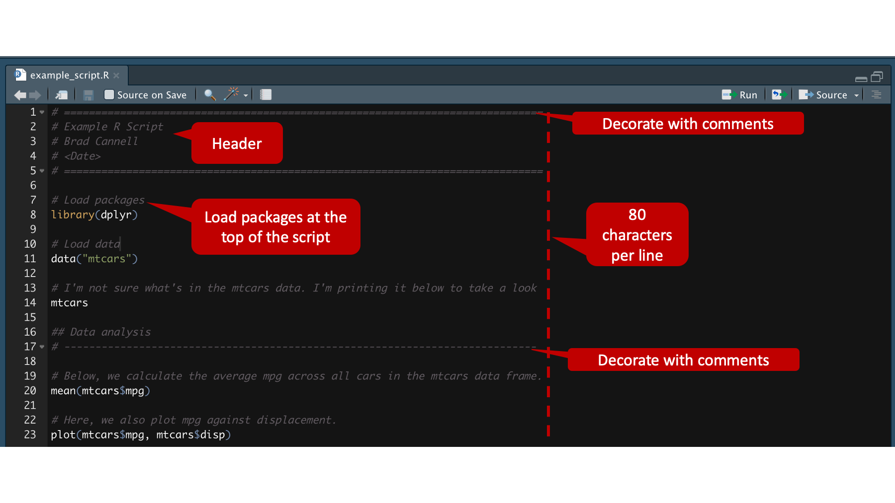
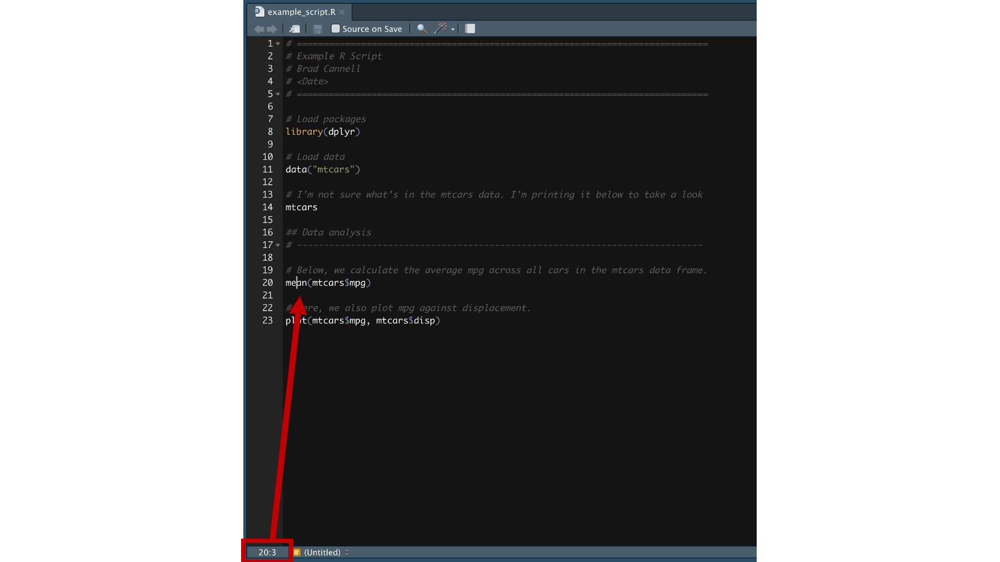
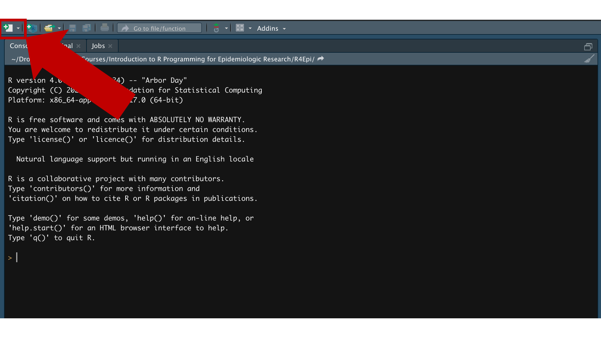
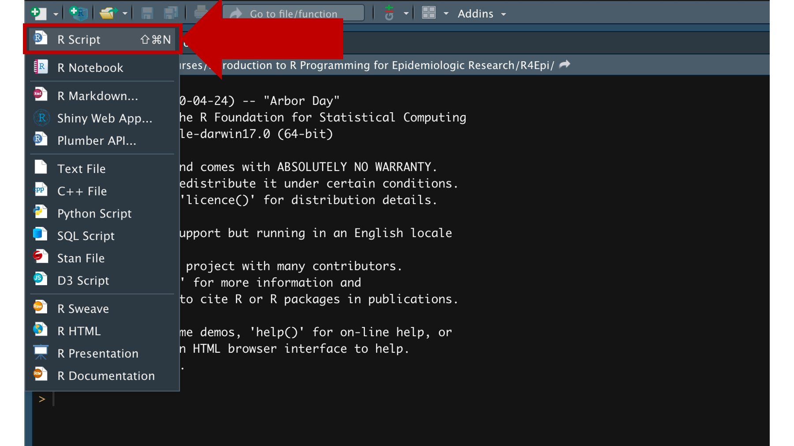
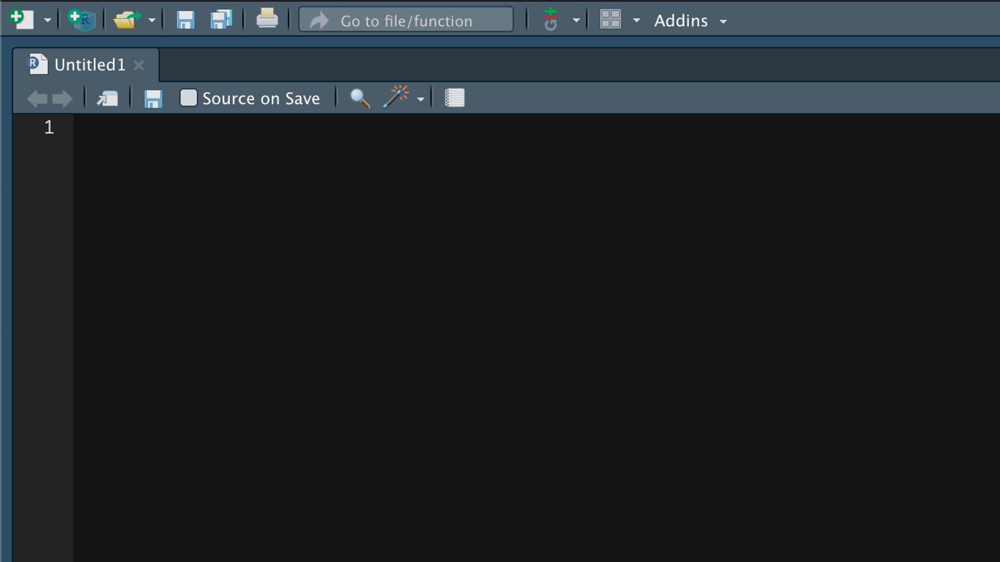

7 R Scripts
Up to this point, we’ve only showed you how to submit your R code to R in the console. Figure 7.1
Submitting code directly to the console in this way works well for quick little tasks and snippets of code. But, writing longer R programs this way has some drawbacks that are probably already obvious to you. Namely, your code isn’t saved anywhere. And, because it isn’t saved anywhere, you can’t modify it, use it again later, or share it with others.
Technically, the statements above are not entirely true. When you submit code to the console, it is copied to RStudio’s History pane and from there you can save, modify, and share with others (see figure Figure 7.2. But, this method is much less convenient, and provides you with far fewer whistles and bells than the other methods we’ll discuss in this book.

Those of you who have worked with other statistical programs before may be familiar with the idea of writing, modifying, saving, and sharing code scripts. SAS calls these code scripts “SAS programs”, Stata calls them “DO files”, and SPSS calls them “SPSS syntax files”. If you haven’t created code scripts before, don’t worry. There really isn’t much to it.
In R, the most basic type of code script is simply called an R script. An R script is just a plain text file that contains R code and comments. R script files end with the file extension .R.
Before we dive into giving you any more details about R scripts, we want to say that we’re actually going to discourage you from using them for most of what we do in this book. Instead, we’re going to encourage you to use Quarto files for the majority of your interactive coding, and for preparing your final products for end users. The next chapter is all about Quarto files. However, we’re starting with R scripts because:
- They are simpler than Quarto files, so they are a good place to start.
- Some of what we discuss below will also apply to Quarto files.
- R scripts are a better choice than Quarto files in some situations (e.g., writing R packages, creating Shiny apps).
- Some people just prefer using R scripts.
With all that said, the screenshot below is of an example R script:

Click here to download the R script
As you can see, I’ve called out a couple key elements of the R script to discuss. Figure 7.3
First, instead of just jumping into writing R code, lines 1-5 contain a header that we’ve created with comments. Because we’ve created it with comments, the R interpreter will ignore it. But, it will help other people you collaborate with (including future you) figure out what this script does. Therefore, we suggest that your header includes at least the following elements:
- A brief description of what the R script does.
- The author(s) who wrote the R script.
- Important dates. For example, the date it was originally created and the date it was last modified. You can usually get these dates from your computer’s operating system, but they aren’t always accurate.
Second, you may notice that we also used comments to create something we’re calling decorations on lines 1, 5, and 17. Like all comments, they are ignored by the R interpreter. But, they help create visual separation between distinct sections of your R code, which makes your code easier for humans to read. We tend to use the equal sign (# ====) for separating major sections and the dash (# ----) for separating minor sections; although, “major” and “minor” are admittedly subjective.
we haven’t explicitly highlighted it in the screenshot above, but it’s probably worth pointing out the use of line breaks (i.e., returns) in the code as well. This is much easier to read…
# Load packages
library(dplyr)
# Load data
data("mtcars")
# I'm not sure what's in the mtcars data. I'm printing it below to take a look
mtcars
## Data analysis
# ----------------------------------------------------------------------------
# Below, we calculate the average mpg across all cars in the mtcars data frame.
mean(mtcars$mpg)
# Here, we also plot mpg against displacement.
plot(mtcars$mpg, mtcars$disp)than this…
# Load packages
library(dplyr)
# Load data
data("mtcars")
# I'm not sure what's in the mtcars data. I'm printing it below to take a look
mtcars
## Data analysis
# ----------------------------------------------------------------------------
# Below, we calculate the average mpg across all cars in the mtcars data frame.
mean(mtcars$mpg)
# Here, we also plot mpg against displacement.
plot(mtcars$mpg, mtcars$disp)Third, it’s considered a best practice to keep each line of code to 80 characters (including spaces) or less. There’s a little box at the bottom left corner of your R script that will tell you what row your cursor is currently in and how many characters into that row your cursor is currently at (starting at 1, not 0).

For example, 20:3 corresponds to having your cursor between the “e” and the “a” in mean(mtcars$mpg) in the example script above. Figure 7.4
Fourth, it’s also considered a best practice to load any packages that your R code will use at the very top of your R script (lines 7 & 8). Figure 7.3 Doing so will make it much easier for others (including future you) to see what packages your R code needs to work properly right from the start.
7.1 Creating R scripts
To create your own R scripts, click on the icon shown below Figure 7.5 and you will get a dropdown box with a list of files you can create. @ref(fig:new-r-script2)

Click the very first option – R Script.

When you do, a new untitled R Script will appear in the source pane.

And that’s pretty much it. Everything else in figure Figure 7.3 is just R code and comments about the R code. But, you can now easily save, modify, and share this code with others. In the next chapter, we are going to learn how to write R code in Quarto files, where we can add a ton of whistles and bells to this simple R script.